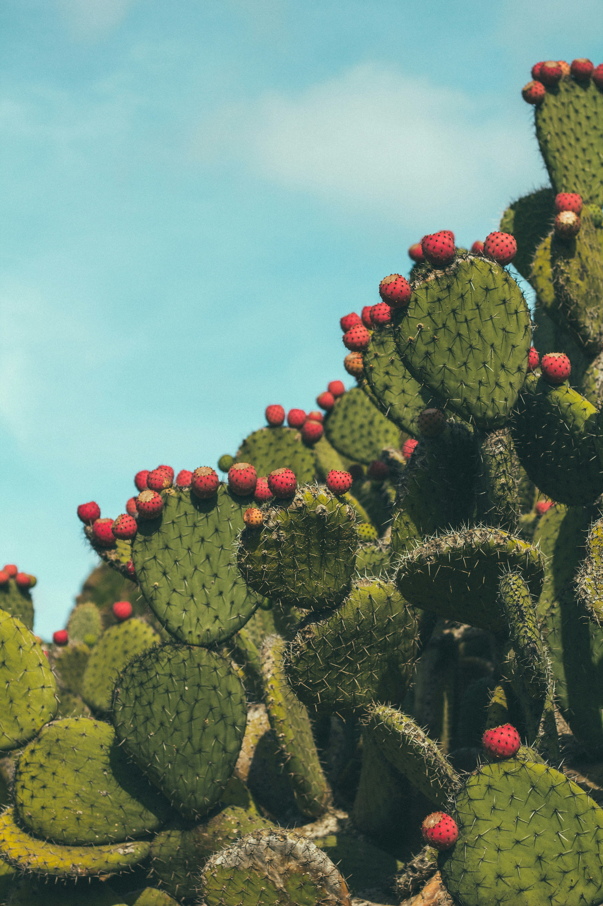

Tentang Website Ini
Website ini berisi panduan sederhana untuk pemula yang ingin merawat kaktus dan sukulen. Kedua jenis tanaman ini cocok untuk kamu yang sibuk karena tidak perlu disiram setiap hari.

Kebutuhan Dasar Tanaman
Hal yang Perlu Disiapkan
- Pot dengan lubang drainase
- Media tanam yang porous (campuran tanah, pasir, dan sekam)
- Tempat dengan cahaya matahari cukup
Langkah Menanam Kaktus
- Isi pot dengan media tanam sampai setengah penuh
- Letakkan kaktus di tengah pot
- Tambahkan media tanam sampai menutupi akar
- Tunggu 2 sampai 3 hari sebelum menyiram pertama kali
Jadwal Penyiraman
| Jenis Tanaman | Frekuensi Siram | Kebutuhan Cahaya |
|---|---|---|
| Kaktus | Seminggu sekali | Matahari penuh |
| Echeveria | Seminggu sekali | Matahari pagi |
| Lidah buaya | Dua minggu sekali | Cahaya terang tidak langsung |